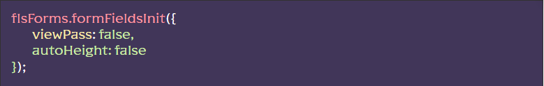
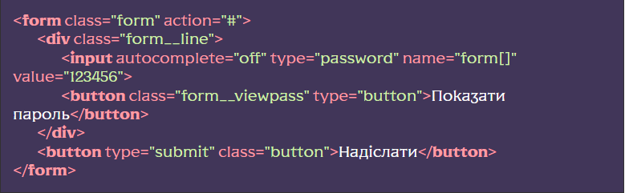
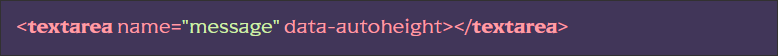
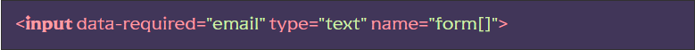
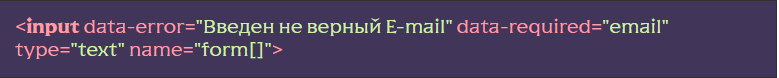
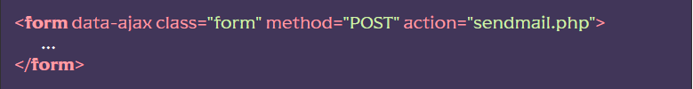
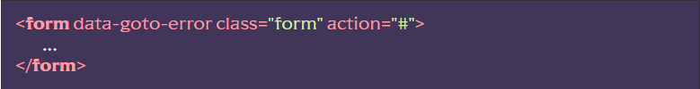
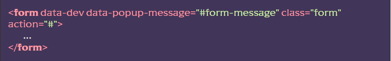
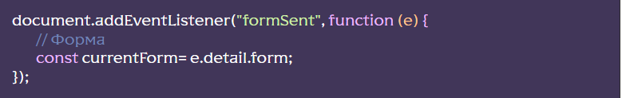

У цьому документі описано загальний функціонал роботи з полями, плейсхолдерами, валідацією, варіантами відправлення форм тощо. В окремих розділах буде описано функціонал конкретних елементів форм, таких як:
- Надсилання листів на пошту (PHPMailer)
- Кастомізація елемента SELECT
- Кастомізація (стилізація) елементів CHECKBOX та RADIO
- Модуль “Маски” для полів вводу
- Модуль “Зоряний рейтинг”
- Модуль “Кількість”
- Модуль “Range” (повзунок)
Робота з полями форм
Робота з полями форм має на увазі наступний функціонал:
- Додавання класів полю та його батькові при фокусі
- Функціонал “Показати пароль” для полів з типом password
- Можливість моментальної валідації поля при втраті фокусу
Щоб підключити загальний функціонал до роботи з полями форм необхідно розкоментувати функцію flsForms.formFieldsInit({…}) у файлі js/app.js:
Передавати функції можна за допомогою наступних параметрів:
- viewPass - дозволяє увімкнути функціонал “Показати пароль” . true – увімкнено, false – вимкнено (за замовчуванням).
- autoHeight – дозволяє увімкнути функціонал “Автовисота” для текстової області. true – увімкнено, false – вимкнено (за замовчуванням).
Робота с атрибутом placeholder
Для того, щоб надпис який є в атрибуті поля форми placeholder зникав при фокусі, необхідно додати до поля класс input та розкоментувати @import “input”; у файлі scss/base/forms/forms.scss. Якщо нам потрібно вимкнути приховування для конкретного поля, слід додати атрибут data-placeholder-nohide
Валідація поля при втраті фокусу
Для того, щоб скрипт почав викликати функціонал валідації поля в момент втрати ним фокусу, слід додати полю атрибут data-validate.
Варто додати, що функціонал роботи з полями форм також видалить помилку додану до поля валідатор при отриманні фокусу. Докладніше про функціонал валідації полів дивись далі в цьому документі.
Функціонал “Показати пароль”
Функціонал “Показати пароль” дозволяє відображати зашифроване значення поля з типом password при натисканні на об’єкт з класом, що містить рядок “__viewpass”, який знаходиться разом з полем в одному батьку:
У момент кліка на об’єкт з класом, що містить рядок “__viewpass”, до нього додається клас _viewpass-active, а тип поля введення змінюється на text. Повторне натискання виконає зворотні дії.
Нагадаю, щоб увімкнути функціонал “Показати пароль” слід вказати true для параметра viewPass при підключенні функціонала у файлі js/app.js.
Функціонал “Автовисота” для textarea
Функціонал “Автовисота” дозволяє елементу textarea автоматично підлаштовуватися по висоті під текст, що вводиться.
Для включення необхідно назвати true для параметра autoHeight, а також додати атрибут data-autoheight елементe(ам) textarea.
Додатково можна вказати такі параметри:
- data-autoheight-min=’число’ – мінімальна (стартова) висота textarea
- data-autoheight-max=’число’ – максимальна висота textarea
Валідація елементів форм
Для включення функціоналу слід розкоментувати функцію flsForms.formSubmit(); та/або flsForms.formFieldsInit({…}) у файлі js/app.js
Щоб елемент форми почав проходити валідацію, йому слід додати атрибут data-required. Тепер при надсиланні форми, а також якщо елементу доданий атрибут data-validate, він перевірятиметься на предмет правильного заповнення.
При доданому атрибуті data-validate валідація буде відбуватись миттєво при втраті полем фокусу
Щоб включити особливі правила валідації поля, атрибуту слід додати одне з значень:
- email – увімкне валідацію на введення коретного E-mail
- йде робота над новими пресетами
Приклад:
Якщо елемент заповнений неправильно, до нього, а також до його батька додасться клас _form-error. Якщо ми хочемо додатково вивести довільний текст помилки, слід вказати його в атрибуті data-error і додати до поля:
Тепер, при виникненні помилки валідації, під елементом додасться об’єкт із класом form__error, який містить ваш текст помилки.
Нагадаю, що функціонал роботи з полями видалить класи помилок та об’єкт із класом form__error при отриманні полем фокусу.
Для відключення валідації елементів конкретної форми їй слід додати атрибут data-no-validate
Відправлення форм
Для включення функціоналу слід розкоментувати функцію flsForms.formSubmit(); у файлі js/app.js:
Валідація елементів форми
За замовчанням, при відправленні форми поля відмічені data-required/data-required=’…’ будуть проходити валідацію. Для відключення валідації елементів конкретної форми їй слід додати атрибут data-no-validate
Режими відправлення форми
У ЧФ існує кілька режимів контролю надсилання форм:
- Стандартне HTML відправлення форми (за замовчуванням) – якщо валідація пройдена (була включена), форма відправиться на вказану в атрибуті action адресу (з переходом сторінки), методом вказаним в атрибуті метод.
- AJAX відправка форми – якщо валідацію пройдено (було включено), форма відправиться AJAX запитом на вказану в атрибуті action адресу, методом вказаним в атрибуті method. Сторінка не перезавантажиться, всі елементи форми повернуться до вихідних значень (очищення форми).
- Режим імітації відправки форми – якщо валідацію пройдено (було включено), форма нікуди не відправиться, сторінка не перезавантажиться, всі елементи форми повернуться до вихідних значень (очищення форми). Використовується для демонстрації додаткових можливостей форм, таких, як показ попапа про успішну відправку.
Для включення режиму AJAX надсилання достатньо додати формі атрибут data-ajax, а якщо потрібний режим імітації надсилання додаємо атрибут data-dev.
Прокручування до елемента з помилкою
Буває, що форма дуже велика і, при виникненні помилки валідації, добре показати елемент з помилкою користувачеві. Для цього є функціонал “прокрутка до елементу з помилкою”. Для включення достатньо додати формі атрибут data-goto-error
Показ попапа після надсилання форми
Якщо необхідно, після відправки форми, показати попап додаємо до форми атрибут data-popup-message і як значення вказуємо селектор попапа
Тільки для режимів data-ajax або data-dev. Функціонал попапів також має бути підключений
Події
Після кожної відправки форми спрацьовує подію у formSent, її можна відловити в будь-якій частині коду:
Розташування та додаткові дані
Функціі formFieldsInit(), formSubmit() а також об’єкт formValidate знаходяться у файлі js/files/forms/form.js